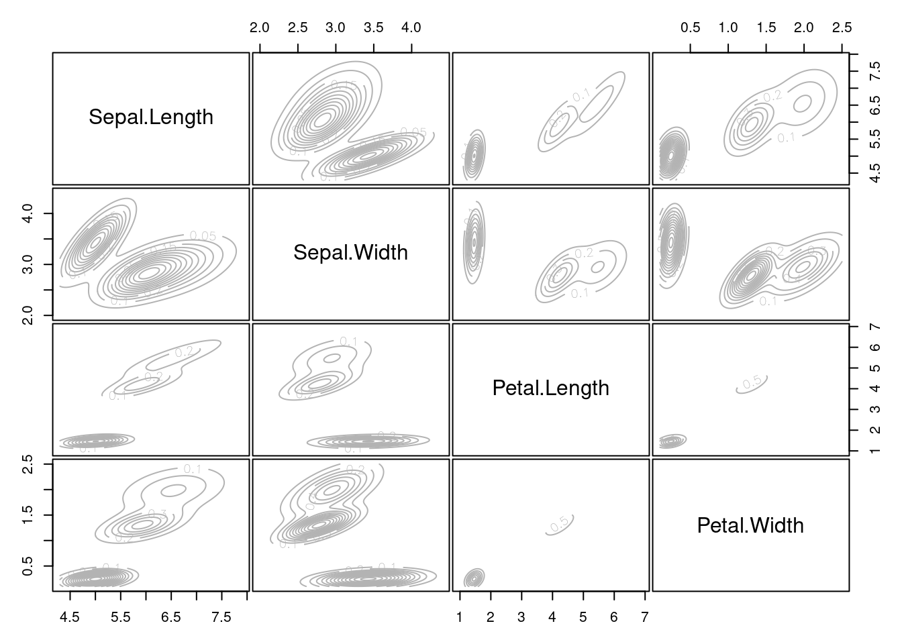
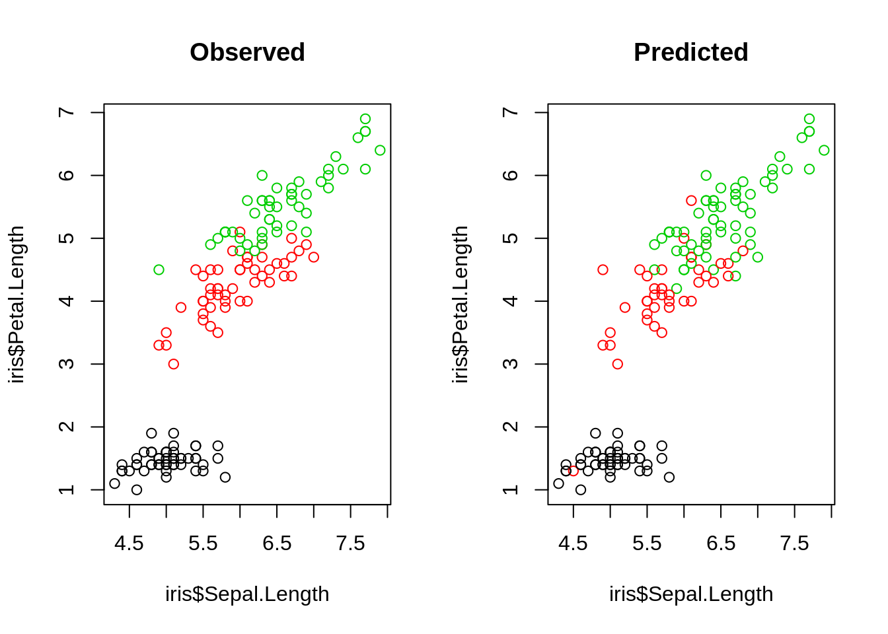

2 Introduction to Machine Learning
There are three basic ML tasks
- Unsupervised learning
- Supervised learning
- Reinforcement learning
Unsupervised learning is a technique, where one does not need to supervise the model. Instead, you allow the model to work on its own to discover information.
In supervised learning, you train an algorithm using labeled data, which means that you already know the correct answer for a part of the data (the so called tracings data).
Reinforcement learning is a technique that emulates a game-like situation. The algorithm comes up with a solution by try and error and gets for the actions ether rewards or penalties. As in games, the goal is to maximize the rewards. We will talk on the last day more about this technique.
For the moment, we will focus on the first two tasks, supervised and unsupervised learning. To do so, we will first start with a small example, but before you start with the code, here a video to remind you of what we talked about in the class:
2.1 Unsupervised learning
In unsupervised learning, we want to identify patterns in data without having any examples (supervision) about what the correct patterns / classes are. As an example, consider our iris dataset. Here, we have 150 observations of 4 floral traits
colors = hcl.colors(3)
traits = as.matrix(iris[,1:4])
species = iris$Species
image(y = 1:4, x = 1:length(species) , z = traits,
ylab = "Floral trait", xlab = "Individual")
The observations are from 3 species, and indeed those species tend to have different traits, meaning that the observations form 3 clusters.
pairs(traits, pch = as.integer(species), col = colors[as.integer(species)])
However, imagine we didn’t know what species are, which is basically the situation in which people in the antique have been. The people just noted that some plants have different flowers than others, and decided to give them different names. This kind of process is what unsupervised learning does.
2.1.1 Hierarchical clustering
Build up a hierarchy (tree) between data points
- Agglomerative: start with each data point in their own cluster, merge them up hierarchically
- Divisive: start with all data in one cluster, and split hierarchically
Merges / splits are done according to linkage criterion, which measures distance between (potential) clusters. Cut the tree at a certain height to get clusters.
Here an example
set.seed(123)
d = dist(traits)
hc <- hclust(d, method = "complete")
plot(hc)
rect.hclust(hc, k = 3)
Same plot, but with colors for true species identity
library(ape)
plot(as.phylo(hc),
tip.color = colors[as.integer(species)],
direction = "downwards")
hcRes3 <- cutree(hc, k = 3)Calculate confusion matrix - note we switching labels here so that it fits to the species
tmp <- hcRes3
tmp[hcRes3 == 2] = 3
tmp[hcRes3 == 3] = 2
hcRes3 <- tmp
table(hcRes3, species)## species
## hcRes3 setosa versicolor virginica
## 1 50 0 0
## 2 0 27 1
## 3 0 23 49Note that results might change if you choose a different agglomeration method, distance metric, or whether you scale your variables. Compare, e.g. to this example
hc <- hclust(d, method = "ward.D2")
plot(as.phylo(hc),
tip.color = colors[as.integer(species)],
direction = "downwards")hcRes3 <- cutree(hc, k = 3)
table(hcRes3, species)## species
## hcRes3 setosa versicolor virginica
## 1 50 0 0
## 2 0 49 15
## 3 0 1 35Which method is best?
library(dendextend)##
## ---------------------
## Welcome to dendextend version 1.14.0
## Type citation('dendextend') for how to cite the package.
##
## Type browseVignettes(package = 'dendextend') for the package vignette.
## The github page is: https://github.com/talgalili/dendextend/
##
## Suggestions and bug-reports can be submitted at: https://github.com/talgalili/dendextend/issues
## Or contact: <tal.galili@gmail.com>
##
## To suppress this message use: suppressPackageStartupMessages(library(dendextend))
## ---------------------##
## Attaching package: 'dendextend'## The following objects are masked from 'package:ape':
##
## ladderize, rotate## The following object is masked from 'package:stats':
##
## cutreemethods <- c("ward.D", "single", "complete", "average", "mcquitty", "median", "centroid", "ward.D2")
out <- dendlist()
for(i in seq_along(methods)) {
res <- hclust(d, method = methods[i])
out <- dendlist(out, as.dendrogram(res))
}
names(out) <- methods
out## $ward.D
## 'dendrogram' with 2 branches and 150 members total, at height 199.6205
##
## $single
## 'dendrogram' with 2 branches and 150 members total, at height 1.640122
##
## $complete
## 'dendrogram' with 2 branches and 150 members total, at height 7.085196
##
## $average
## 'dendrogram' with 2 branches and 150 members total, at height 4.062683
##
## $mcquitty
## 'dendrogram' with 2 branches and 150 members total, at height 4.497283
##
## $median
## 'dendrogram' with 2 branches and 150 members total, at height 2.82744
##
## $centroid
## 'dendrogram' with 2 branches and 150 members total, at height 2.994307
##
## $ward.D2
## 'dendrogram' with 2 branches and 150 members total, at height 32.44761
##
## attr(,"class")
## [1] "dendlist"get_ordered_3_clusters <- function(dend) {
cutree(dend, k = 3)[order.dendrogram(dend)]
}
dend_3_clusters <- lapply(out, get_ordered_3_clusters)
compare_clusters_to_iris <- function(clus) {FM_index(clus, rep(1:3, each = 50), assume_sorted_vectors = TRUE)}
clusters_performance <- sapply(dend_3_clusters, compare_clusters_to_iris)
dotchart(sort(clusters_performance), xlim = c(0.3,1),
xlab = "Fowlkes-Mallows index",
main = "Performance of linkage methods \n in detecting the 3 species",
pch = 19)We might conclude here that ward.D2 works best. However, as we will learn later, optimizing the method without a hold-out for testing means that we may be overfitting. We should check this using cross-validation.
2.1.2 k-means clustering
Another example for an unsupervised learning algorithm is k-means clustering, one of the simplest and most popular unsupervised machine learning algorithms.
A cluster refers to a collection of data points aggregated together because of certain similarities. In our example from above this similarities could be similar flowers aggregated together to a plant.
To start with the algorithm, you first have to specify the number of clusters (for our example the number of species). Each cluster has a centroid, which is the imaginary or real location representing the center of the cluster (for our example this would be how an average plant of a specific species would look like). The algorithm starts by randomly putting centroids somewhere and then adds each new data point to the cluster which minimizes the overall in-cluster sum of squares. After the algorithm has assigned a new data point to a cluster the centroid gets updated. By iterating this procedure for all data points and then starting again, the algorithm can find the optimum centroids and the data-points belonging to this cluster.
The k in K-means refers to the number of clusters and the ‘means’ refers to averaging of the data-points to find the centroids.
A typical pipeline for using kmeans clustering looks the same as for the other algortihms. After having visualized the data, we fit the model, visualize the results and have a look at the performance by use of the confusion matrix.
set.seed(123)
kc <- kmeans(traits, 3)
kc## K-means clustering with 3 clusters of sizes 50, 62, 38
##
## Cluster means:
## Sepal.Length Sepal.Width Petal.Length Petal.Width
## 1 5.006000 3.428000 1.462000 0.246000
## 2 5.901613 2.748387 4.393548 1.433871
## 3 6.850000 3.073684 5.742105 2.071053
##
## Clustering vector:
## [1] 1 1 1 1 1 1 1 1 1 1 1 1 1 1 1 1 1 1 1 1 1 1 1 1 1 1 1 1 1 1 1 1 1 1 1 1 1 1 1 1 1 1 1 1 1 1 1 1 1 1 2 2 3 2 2 2 2 2 2 2 2 2 2 2 2 2 2 2 2 2 2 2 2 2
## [75] 2 2 2 3 2 2 2 2 2 2 2 2 2 2 2 2 2 2 2 2 2 2 2 2 2 2 3 2 3 3 3 3 2 3 3 3 3 3 3 2 2 3 3 3 3 2 3 2 3 2 3 3 2 2 3 3 3 3 3 2 3 3 3 3 2 3 3 3 2 3 3 3 2 3
## [149] 3 2
##
## Within cluster sum of squares by cluster:
## [1] 15.15100 39.82097 23.87947
## (between_SS / total_SS = 88.4 %)
##
## Available components:
##
## [1] "cluster" "centers" "totss" "withinss" "tot.withinss" "betweenss" "size" "iter" "ifault"Visualizing the results. Color codes true species identity, symbol shows cluster result
plot(iris[c("Sepal.Length", "Sepal.Width")], col = colors[as.integer(species)], pch = kc$cluster)
points(kc$centers[, c("Sepal.Length", "Sepal.Width")], col = colors, pch = 1:3, cex = 3)
We see that there are are some discrepancies. Confusion matrix:
table(iris$Species, kc$cluster)##
## 1 2 3
## setosa 50 0 0
## versicolor 0 48 2
## virginica 0 14 36If you want to animate the clustering process, you could run
library(animation)
saveGIF(kmeans.ani(x = traits[,1:2], col = colors), interval = 1, ani.width = 800, ani.height = 800)Ellbow technique to determine the number of clusters
getSumSq <- function(k){kmeans(traits, k, nstart=25)$tot.withinss}
iris.kmeans1to10 <- sapply(1:10, getSumSq)
plot(1:10, iris.kmeans1to10, type="b", pch = 19, frame = FALSE,
xlab="Number of clusters K",
ylab="Total within-clusters sum of squares")
2.1.3 Density-based clustering
set.seed(123)
library(dbscan)
kNNdistplot(traits, k = 4)
abline(h = 0.4, lty = 2)# fpc package
dc <- dbscan(traits, eps = 0.4, minPts = 6)
dc## DBSCAN clustering for 150 objects.
## Parameters: eps = 0.4, minPts = 6
## The clustering contains 4 cluster(s) and 32 noise points.
##
## 0 1 2 3 4
## 32 46 36 14 22
##
## Available fields: cluster, eps, minPtslibrary(factoextra)## Loading required package: ggplot2## Welcome! Want to learn more? See two factoextra-related books at https://goo.gl/ve3WBafviz_cluster(dc, traits, geom = "point", ggtheme = theme_light())2.1.4 Model-based clustering
The last class of methods for unsupervised clustering are so-called model-based clustering methods.
library(mclust)## __ ___________ __ _____________
## / |/ / ____/ / / / / / ___/_ __/
## / /|_/ / / / / / / / /\__ \ / /
## / / / / /___/ /___/ /_/ /___/ // /
## /_/ /_/\____/_____/\____//____//_/ version 5.4.7
## Type 'citation("mclust")' for citing this R package in publications.mb = Mclust(traits)## fitting ...
##
|
| | 0%
|
|= | 1%
|
|== | 2%
|
|=== | 2%
|
|===== | 3%
|
|====== | 4%
|
|======= | 5%
|
|======== | 6%
|
|========= | 6%
|
|========== | 7%
|
|=========== | 8%
|
|============ | 9%
|
|============== | 9%
|
|=============== | 10%
|
|================ | 11%
|
|================= | 12%
|
|================== | 13%
|
|=================== | 13%
|
|==================== | 14%
|
|====================== | 15%
|
|======================= | 16%
|
|======================== | 17%
|
|========================= | 17%
|
|========================== | 18%
|
|=========================== | 19%
|
|============================ | 20%
|
|============================= | 20%
|
|=============================== | 21%
|
|================================ | 22%
|
|================================= | 23%
|
|================================== | 24%
|
|=================================== | 24%
|
|==================================== | 25%
|
|===================================== | 26%
|
|======================================= | 27%
|
|======================================== | 28%
|
|========================================= | 28%
|
|========================================== | 29%
|
|=========================================== | 30%
|
|============================================ | 31%
|
|============================================= | 31%
|
|============================================== | 32%
|
|================================================ | 33%
|
|================================================= | 34%
|
|================================================== | 35%
|
|=================================================== | 35%
|
|==================================================== | 36%
|
|===================================================== | 37%
|
|====================================================== | 38%
|
|======================================================== | 39%
|
|========================================================= | 39%
|
|========================================================== | 40%
|
|=========================================================== | 41%
|
|============================================================ | 42%
|
|============================================================= | 43%
|
|============================================================== | 43%
|
|=============================================================== | 44%
|
|================================================================= | 45%
|
|================================================================== | 46%
|
|=================================================================== | 46%
|
|==================================================================== | 47%
|
|===================================================================== | 48%
|
|====================================================================== | 49%
|
|======================================================================= | 50%
|
|========================================================================= | 50%
|
|========================================================================== | 51%
|
|=========================================================================== | 52%
|
|============================================================================ | 53%
|
|============================================================================= | 54%
|
|============================================================================== | 54%
|
|=============================================================================== | 55%
|
|================================================================================= | 56%
|
|================================================================================== | 57%
|
|=================================================================================== | 57%
|
|==================================================================================== | 58%
|
|===================================================================================== | 59%
|
|====================================================================================== | 60%
|
|======================================================================================= | 61%
|
|======================================================================================== | 61%
|
|========================================================================================== | 62%
|
|=========================================================================================== | 63%
|
|============================================================================================ | 64%
|
|============================================================================================= | 65%
|
|============================================================================================== | 65%
|
|=============================================================================================== | 66%
|
|================================================================================================ | 67%
|
|================================================================================================== | 68%
|
|=================================================================================================== | 69%
|
|==================================================================================================== | 69%
|
|===================================================================================================== | 70%
|
|====================================================================================================== | 71%
|
|======================================================================================================= | 72%
|
|======================================================================================================== | 72%
|
|========================================================================================================= | 73%
|
|=========================================================================================================== | 74%
|
|============================================================================================================ | 75%
|
|============================================================================================================= | 76%
|
|============================================================================================================== | 76%
|
|=============================================================================================================== | 77%
|
|================================================================================================================ | 78%
|
|================================================================================================================= | 79%
|
|=================================================================================================================== | 80%
|
|==================================================================================================================== | 80%
|
|===================================================================================================================== | 81%
|
|====================================================================================================================== | 82%
|
|======================================================================================================================= | 83%
|
|======================================================================================================================== | 83%
|
|========================================================================================================================= | 84%
|
|========================================================================================================================== | 85%
|
|============================================================================================================================ | 86%
|
|============================================================================================================================= | 87%
|
|============================================================================================================================== | 87%
|
|=============================================================================================================================== | 88%
|
|================================================================================================================================ | 89%
|
|================================================================================================================================= | 90%
|
|================================================================================================================================== | 91%
|
|==================================================================================================================================== | 91%
|
|===================================================================================================================================== | 92%
|
|====================================================================================================================================== | 93%
|
|======================================================================================================================================= | 94%
|
|======================================================================================================================================== | 94%
|
|========================================================================================================================================= | 95%
|
|========================================================================================================================================== | 96%
|
|=========================================================================================================================================== | 97%
|
|============================================================================================================================================= | 98%
|
|============================================================================================================================================== | 98%
|
|=============================================================================================================================================== | 99%
|
|================================================================================================================================================| 100%Mclust automatically compares a number of candidate models (#clusters, shape) according to BIC. We can look at the selected model via
mb$G # two clusters## [1] 2mb$modelName # > ellipsoidal, equal shape## [1] "VEV"We see that the algorithm prefers to have 2 clusters. For better comparability to the other 2 methods, we will overrule this by setting:
mb3 = Mclust(traits, 3)## fitting ...
##
|
| | 0%
|
|========== | 7%
|
|=================== | 13%
|
|============================= | 20%
|
|====================================== | 27%
|
|================================================ | 33%
|
|========================================================== | 40%
|
|=================================================================== | 47%
|
|============================================================================= | 53%
|
|====================================================================================== | 60%
|
|================================================================================================ | 67%
|
|========================================================================================================== | 73%
|
|=================================================================================================================== | 80%
|
|============================================================================================================================= | 87%
|
|====================================================================================================================================== | 93%
|
|================================================================================================================================================| 100%Result in terms of the predicted densities for the 3 clusters
plot(mb3, "density")
Predicted clusters
plot(mb3, what=c("classification"), add = T)
Confusion matrix
table(iris$Species, mb3$classification)##
## 1 2 3
## setosa 50 0 0
## versicolor 0 45 5
## virginica 0 0 502.1.5 Ordination
Note the relationship between clustering and ordination. Here a PCA ordination on on the
pcTraits <- prcomp(traits, center = TRUE,scale. = TRUE)
biplot(pcTraits, xlim = c(-0.25,0.25), ylim = c(-0.25,0.25))You can cluster the results of this ordination, ordinate before clustering, or superimpose one on the other.
2.2 Supervised learning: regression and classification
The two most prominent branches of supervised learning are regression and classification. Fundamentally, classification is about predicting a label and regression is about predicting a quantity. The following video explains that in more depth:
2.2.1 Supervised regression using Random Forest
The random forest (RF) algorithm is possibly the most widely used ML algorithm and can be used for regression and classification. We will talk more about the algorithm on Day 2.
For the moment, we want to go through typical workflow for a supervised regression: First, we visualize the data. Next, we fit the model and lastly we visualize the results. We will again use the iris dataset that we used before. The goal is now to predict Sepal.Length based on the infomration about the other variables (including species).
Fitting the model
library(randomForest)## randomForest 4.6-14## Type rfNews() to see new features/changes/bug fixes.##
## Attaching package: 'randomForest'## The following object is masked from 'package:ggplot2':
##
## marginm1 <- randomForest(Sepal.Length ~ ., data = iris)
# str(m1)
# m1$type
# predict(m1)
print(m1)##
## Call:
## randomForest(formula = Sepal.Length ~ ., data = iris)
## Type of random forest: regression
## Number of trees: 500
## No. of variables tried at each split: 1
##
## Mean of squared residuals: 0.1364625
## % Var explained: 79.97Visualization of the results
par(mfrow = c(1,2))
plot(predict(m1), iris$Sepal.Length, xlab = "predicted", ylab = "observed")
abline(0,1)
varImpPlot(m1)To understand, the structure of a RF in more detail, we can use a package from GitHub
# devtools::install_github('araastat/reprtree')
reprtree:::plot.getTree(m1, iris)## Loading required package: plotrix
2.2.2 Supervised classification using Random Forest
With the RF, we can also do classification. The steps are the same as for regression tasks, but we can additionally, see how well it performed by looking at the so called confusion matrix. Each row of this matrix contains the instances in a predicted class and each column represent the instances in an actual class. Thus the diagonals are the correctly predicted classes and the off-diagnoal elements are the falsly classified elements.
Fitting the model:
set.seed(123)
m1 <- randomForest(Species ~ ., data = iris)
# str(m1)
# m1$type
# predict(m1)
print(m1)##
## Call:
## randomForest(formula = Species ~ ., data = iris)
## Type of random forest: classification
## Number of trees: 500
## No. of variables tried at each split: 2
##
## OOB estimate of error rate: 4.67%
## Confusion matrix:
## setosa versicolor virginica class.error
## setosa 50 0 0 0.00
## versicolor 0 47 3 0.06
## virginica 0 4 46 0.08Visualizing the fitted model:
par(mfrow = c(1,2))
reprtree:::plot.getTree(m1, iris)
Visualizing results ecologically:
oldpar <- par(mfrow = c(1,2))
plot(iris$Petal.Width, iris$Petal.Length, col = iris$Species, main = "observed")
plot(iris$Petal.Width, iris$Petal.Length, col = predict(m1), main = "predicted")
Confusion matrix:
table(predict(m1),iris$Species)##
## setosa versicolor virginica
## setosa 50 0 0
## versicolor 0 47 4
## virginica 0 3 462.3 Introduction to Tensorflow
All operations in TF are written in C++ and are highly optimized. But dont worry, we don’t have to use C++ to use TF because there are several bindings for other languages. TensorFlow officialy supports a Python API, but meanwhile there are several community carried APIs for other languages:
- R
- Go
- Rust
- Swift
- JavaScript
In this course we will use TF with the https://tensorflow.rstudio.com/ binding, that was developed and published 2017 by the RStudio Team. They developed first a R package (reticulate) to call python in R. Actually, we are using in R the python TF module (more about this later). TF offers different levels of API. We could implement a neural network completly by ourselves, or we could use Keras which is provided by TF as a submodule. Keras is a powerful module for building and training neural networks. It allows us to build and train neural networks in a few lines of codes. Since the end of 2018, Keras and TF are completly interoperable, allowing us to utilize the best of both. In this course, we will show how we can use Keras for neural networks but also how we can use the TF’s automatic differenation for using complex objective functions.
One of the most commonly used frameworks for machine learning is TensorFlow. TensorFlow is a open source linear algebra library with a focus on neural networks, published by Google in 2015. TF supports several interesting features, im particular automatic differentiation, several gradient optimizers and CPU and GPU parallelization.
These advantages are nicely explained in the following video:
To sum the most important points of the video up:
- TF is a math library which is highly optimized for neural networks
- If a GPU is available, computations can be easily run on the GPU but even on a CPU is TF still very fast
- The “backend” (i.e. all the functions and all computations) are written in C++ and CUDA (CUDA is a programming language for the GPU)
- The interface (the part of TF that we use) is written in python and is also available in R, which means, we can write the code in R/Python but it will be executed by the (compiled) C++ backend.
All operations in TF are written in C++ and are highly optimized. But dont worry, we don’t have to use C++ to use TF, because there are several bindings for other languages. Officially, TensorFlow only supports a Python API, but meanwhile there are several community carried APIs for other languages, including R, Go, Rust, Swift or JavaScript. In this book, we will use TF with the https://tensorflow.rstudio.com/ binding that was developed and published 2017 by the RStudio Team. They developed first a R package (reticulate) to call python in R. Actually, we are using in R the python TF module (more about this later).
Useful links:
- TensorFlow documentation (which is for the python API, but just replace the ‘.’ with ‘$’)
- Rstudio tensorflow website
2.3.1 Tensorflow data containers
TF has two data containers (structures):
- constant (tf$constant) :creates a constant (immutable) value in the computation graph
- variable (tf$Variable): creates a mutable value in the computation graph (used as parameter/weight in models)
To get started with tensorflow, we have to load the library and check if the installation worked.
library(tensorflow)
# Don't worry about weird messages. TF supports additional optimizations
exists("tf")## [1] TRUEDon’t worry about weird messages (they will only appear once at the start of the session).
We now can define the variables and do some math with them:
a = tf$constant(5)
b = tf$constant(10)
print(a)## tf.Tensor(5.0, shape=(), dtype=float32)print(b)## tf.Tensor(10.0, shape=(), dtype=float32)c = tf$add(a, b)
print(c)## tf.Tensor(15.0, shape=(), dtype=float32)tf$print(c)Normal R methods such as print() are provided by the R package “tensorflow.”
The tensorflow library (created by the RStudio team) built R methods for all common operations:
`+.tensorflow.tensor` = function(a, b) return(tf$add(a,b))
tf$print(a+b)Their operators also transfrom automatically R numbers into constant tensors when attempting to add a tensor to a R number:
d = c + 5 # 5 is automatically converted to a tensor
print(d)## tf.Tensor(20.0, shape=(), dtype=float32)TF container are objects, which means that they are not just simple variables of type numeric (class(5)), but they instead have so called methods. Methods are changing the state of a class (which for most of our purposes here is the values of the object) For instance, there is a method to transform the tensor object back to a R object:
class(d)## [1] "tensorflow.tensor" "tensorflow.python.framework.ops.EagerTensor"
## [3] "tensorflow.python.framework.ops._EagerTensorBase" "tensorflow.python.framework.ops.Tensor"
## [5] "tensorflow.python.types.internal.NativeObject" "tensorflow.python.types.core.Tensor"
## [7] "python.builtin.object"class(d$numpy())## [1] "numeric"2.3.2 Tensorflow data types - good practise with R-TF
R uses dynamic typing, which means you can assign to a variable a number, character, function or whatever, and the the type is automatically infered. In other languages you have to state explicitly the type, e.g. in C: int a = 5; float a = 5.0; char a = “a”; While TF tries to infer dynamically the type, often you must state it explicitly. Common important types: - float32 (floating point number with 32bits, “single precision”) - float64 (floating point number with 64bits, “double precision”) - int8 (integer with 8bits) The reason why TF is so explicit about the types is that many GPUs (e.g. the NVIDIA geforces) can handle only up to 32bit numbers! (you do not need high precision in graphical modeling)
But let us see in practice, what we have to do with these types and how to specifcy them:
r_matrix = matrix(runif(10*10), 10,10)
m = tf$constant(r_matrix, dtype = "float32")
b = tf$constant(2.0, dtype = "float64")
c = m / b # doesn't work! we try to divide float32/float64So what went wrong here: we tried to divide a float32 to a float64 number, but, we can only divide numbers of the same type!
r_matrix = matrix(runif(10*10), 10,10)
m = tf$constant(r_matrix, dtype = "float64")
b = tf$constant(2.0, dtype = "float64")
c = m / b # now it worksWe can also specify the type of the object by providing an object e.g. tf$float64.
r_matrix = matrix(runif(10*10), 10,10)
m = tf$constant(r_matrix, dtype = tf$float64)Tensorflow arguments often require exact/explicit data types: TF often expects for arguments integers. In R however an integer is normally saved as float. Thus, we have to use a “L” after an integer to tell the R interpreter that it should be treated as an integer:
is.integer(5)
is.integer(5L)
matrix(t(r_matrix), 5, 20, byrow = TRUE)
tf$reshape(r_matrix, shape = c(5, 20))$numpy()
tf$reshape(r_matrix, shape = c(5L, 20L))$numpy()Skipping the “L” is one of the most common errors when using R-TF!
2.4 Introduction to PyTorch
PyTorch is another famous library for deep learning. As for tensorflow, torch itself is written in c++ but the API in python. Last year, the RStudio team released R-torch, and while r-tensorflow calls the python API in the background, the r-torch API is built directly on the c++ torch library!
Useful links:
- PyTorch documentation (which is for the python API, bust just replace the ‘.’ with ‘$’)
- R-torch website
2.4.1 PyTorch data containers
TF has two data containers (structures):
- constant (tf_tensor(…)) :creates a constant (immutable) value in the computation graph
- variable (tf_$Variable_tensor(…, requires_grad=TRUE)): creates a mutable value in the computation graph (used as parameter/weight in models)
To get started with torch, we have to load the library and check if the installation worked.
library(torch)Don’t worry about weird messages (they will only appear once at the start of the session).
We now can define the variables and do some math with them:
a = torch_tensor(5.)
b = torch_tensor(10.)
print(a)## torch_tensor
## 5
## [ CPUFloatType{1} ]print(b)## torch_tensor
## 10
## [ CPUFloatType{1} ]c = a$add( b )
print(c)## torch_tensor
## 15
## [ CPUFloatType{1} ]The r-torch package provides all common methods (an advantage over tensorflow)
a = torch_tensor(5.)
b = torch_tensor(10.)
print(a+b)## torch_tensor
## 15
## [ CPUFloatType{1} ]print(a/b)## torch_tensor
## 0.5000
## [ CPUFloatType{1} ]print(a*b)## torch_tensor
## 50
## [ CPUFloatType{1} ]Their operators also transfrom automatically R numbers into tensors when attempting to add a tensor to a R number:
d = a + 5 # 5 is automatically converted to a tensor
print(d)## torch_tensor
## 10
## [ CPUFloatType{1} ]As for tensorflow, we have to explicitly transform the tensors back to R:
class(d)## [1] "torch_tensor" "R7"class(as.numeric(d))## [1] "numeric"2.4.2 Torch data types - good practise with R-TF
Similar to tensorflow:
r_matrix = matrix(runif(10*10), 10,10)
m = torch_tensor(r_matrix, dtype = torch_float32())
b = torch_tensor(2.0, dtype = torch_float64())
c = m / b But here’s a difference! With tensorfow we would get an error, but with r-torch, m is automatically casted to a double (float64). However, this is still bad practise!
During the course we will try to provide for all keras/tensorflow examples the corresponding pytorch code snippets.
2.5 First steps with the keras framework
We have seen that we can use TF directly from R, and we could use this knowledge to implement a neural network in TF directly from R. However, this can be quite cumbersome. For simple problems, it is usually faster to use a higher-level API that helps us with implementing the machine learning models in TF. The most common of those is Keras.
Keras is a powerful framework for building and training neural networks with a few lines of codes. Since the end of 2018, Keras and TF are completely interoperable, allowing us to utilize the best of both.
The objective of this lesson is to familiarize yourself with keras. If you have TF installed, Keras can be found within TF: tf.keras. However, the RStudio team has built an R package on top of tf.keras, and it is more convenient to use this. To load the keras package, type
library(keras)2.5.1 Example workflow in keras
To show how keras works, we will now build a small classifier in keras to predict the three species of the iris dataset. Load the necessary packages and datasets:
library(keras)
library(tensorflow)
data(iris)
head(iris)## Sepal.Length Sepal.Width Petal.Length Petal.Width Species
## 1 5.1 3.5 1.4 0.2 setosa
## 2 4.9 3.0 1.4 0.2 setosa
## 3 4.7 3.2 1.3 0.2 setosa
## 4 4.6 3.1 1.5 0.2 setosa
## 5 5.0 3.6 1.4 0.2 setosa
## 6 5.4 3.9 1.7 0.4 setosaIt is beneficial for neural networks to scale the predictors (scaling = centering and standardization, see ?scale) We also split our data into the predictors (X) and the response (Y = the three species).
X = scale(iris[,1:4])
Y = iris[,5]Additionally, keras/tf cannot handle factors and we have to create contrasts (one-hot encoding): To do so, we have to specify the number of categories. This can be tricky for a beginner, because in other programming languages like python and C++ on which TF is built, arrays start at zero. Thus, when we would specify 3 as number of classes for our three species, we would have the classes 0,1,2,3. Therefore, we have to substract it.
Y = to_categorical(as.integer(Y)-1L, 3)
head(Y) # 3 colums, one for each level in the response## [,1] [,2] [,3]
## [1,] 1 0 0
## [2,] 1 0 0
## [3,] 1 0 0
## [4,] 1 0 0
## [5,] 1 0 0
## [6,] 1 0 0After having prepared the data, we will now see a typical workflow to specify a model in keras.
1. Initiliaze a sequential model in keras:
model = keras_model_sequential()A sequential keras model is a higher order type of model within keras and consists of one input and one output model.
2. Add hidden layers to the model (we will learn more about hidden layers during the next days). When specifiying the hidden layers, we also have to specify a so called activation function and their shape. You can think of the activation function as decisive for what is forwarded to the next neuron (but we will learn more about it later). The shape of the input is the number of predictors (here 4) and the shape of the output is the number of classes (here 3).
model %>%
layer_dense(units = 20L, activation = "relu", input_shape = list(4L)) %>%
layer_dense(units = 20L) %>%
layer_dense(units = 20L) %>%
layer_dense(units = 3L, activation = "softmax") - softmax scales a potential multidimensional vector to the interval (0,1]
torch
The torch syntax is very similar, we will give a list of layers to ‘nn_sequential’ function. Here, we have to specify the softmax activation function as an extra layer:
model_torch =
nn_sequential(
nn_linear(4L, 20L),
nn_linear(20L, 20L),
nn_linear(20L, 20L),
nn_linear(20L, 3L),
nn_softmax(2)
)3. Compile the model with a loss function (here: cross entropy) and an optimizer (here: Adamax).
We will leaern about other options later, so for now, do not worry about the “lr” argument, crossentropy or the optimizer.
model %>%
compile(loss = loss_categorical_crossentropy, keras::optimizer_adamax(lr = 0.001))
summary(model)## Model: "sequential"
## __________________________________________________________________________________________________________________________________________________________
## Layer (type) Output Shape Param #
## ==========================================================================================================================================================
## dense (Dense) (None, 20) 100
## __________________________________________________________________________________________________________________________________________________________
## dense_1 (Dense) (None, 20) 420
## __________________________________________________________________________________________________________________________________________________________
## dense_2 (Dense) (None, 20) 420
## __________________________________________________________________________________________________________________________________________________________
## dense_3 (Dense) (None, 3) 63
## ==========================================================================================================================================================
## Total params: 1,003
## Trainable params: 1,003
## Non-trainable params: 0
## __________________________________________________________________________________________________________________________________________________________torch
Specify optimizer and the parameters which will be trained (in our case the parameters of the network)
optimizer_torch = optim_adam(params = model_torch$parameters, lr = 0.01)4. Fit model in 30 iterations(epochs)
model_history =
model %>%
fit(x = X, y = apply(Y,2,as.integer), epochs = 30L, batch_size = 20L, shuffle = TRUE)torch
In torch, we jump directly to the training loop, however, here we have to write our own training loop:
- get a batch of data
- predict on batch
- calculate loss between predictions and true labels
- backpropagate error
- update weights
- go to step 1 and repeat
# Calculate number of training steps
epochs = 30
batch_size = 20
steps = round(nrow(X)/batch_size*30)
X_torch = torch_tensor(X)
Y_torch = torch_tensor(apply(Y, 1, which.max))
# set model into training status
model_torch$train()
log_losses = NULL
# training loop
for(i in 1:steps) {
# get batch
indices = sample.int( nrow(X), batch_size)
# reset backpropagation
optimizer_torch$zero_grad()
# predict and calculate loss
pred = model_torch(X_torch[indices, ])
loss = nnf_cross_entropy(pred, Y_torch[indices])
# backprop and weight update
loss$backward()
optimizer_torch$step()
log_losses[i] = as.numeric(loss)
}5. Plot training history:
plot(model_history)## `geom_smooth()` using formula 'y ~ x'
torch
plot(log_losses, xlab = "steps", ylab = "loss", las = 1)6. Create predictions:
predictions = predict(model, X) # probabilities for each classWe will get probabilites:
head(predictions) # quasi-probabilities for each species## [,1] [,2] [,3]
## [1,] 0.9960687 0.002847936 0.0010832436
## [2,] 0.9627200 0.032958280 0.0043216636
## [3,] 0.9926478 0.005417078 0.0019352434
## [4,] 0.9895927 0.007696305 0.0027109848
## [5,] 0.9977964 0.001502181 0.0007014087
## [6,] 0.9962399 0.002326754 0.0014333621For each plant, we want to know for which species we got the highest probability:
preds = apply(predictions, 1, which.max)
print(preds)## [1] 1 1 1 1 1 1 1 1 1 1 1 1 1 1 1 1 1 1 1 1 1 1 1 1 1 1 1 1 1 1 1 1 1 1 1 1 1 1 1 1 1 2 1 1 1 1 1 1 1 1 2 3 3 2 2 2 3 2 2 2 2 2 2 2 2 2 2 2 2 2 3 2 2 2
## [75] 2 2 2 3 2 2 2 2 2 3 2 3 2 2 2 2 2 2 2 2 2 2 2 2 2 2 3 3 3 3 3 3 3 3 3 3 3 3 3 3 3 3 3 3 3 2 3 3 3 3 3 3 3 3 3 3 3 3 3 2 2 3 3 3 3 3 3 3 3 3 3 3 3 3
## [149] 3 3torch
The torch syntax is very similar, we will give a list of layers to ‘nn_sequential’ function. Here, we have to specify the softmax activation function as an extra layer:
model_torch$eval()
preds_torch = model_torch(torch_tensor(X))
preds_torch = apply(preds_torch, 1, which.max)
print(preds_torch)## [1] 1 1 1 1 1 1 1 1 1 1 1 1 1 1 1 1 1 1 1 1 1 1 1 1 1 1 1 1 1 1 1 1 1 1 1 1 1 1 1 1 1 1 1 1 1 1 1 1 1 1 2 2 2 2 2 2 2 2 2 2 2 2 2 2 2 2 2 2 2 2 3 2 2 2
## [75] 2 2 2 3 2 2 2 2 2 3 3 2 2 2 2 2 2 2 2 2 2 2 2 2 2 2 3 3 3 3 3 3 3 3 3 3 3 3 3 3 3 3 3 3 3 3 3 3 3 3 3 3 3 3 3 3 3 3 3 3 3 3 3 3 3 3 3 3 3 3 3 3 3 3
## [149] 3 3mean(preds_torch == as.integer(iris$Species))## [1] 0.97333337. Calculate Accuracy (how often we have been correct):
mean(preds == as.integer(iris$Species))## [1] 0.92666678. Plot predictions, to see if we have done a good job:
oldpar = par()
par(mfrow = c(1,2))
plot(iris$Sepal.Length, iris$Petal.Length, col = iris$Species, main = "Observed")
plot(iris$Sepal.Length, iris$Petal.Length, col = preds, main = "Predicted")
So you see, building a neural network is with keras very easy and you can already do it on your own.